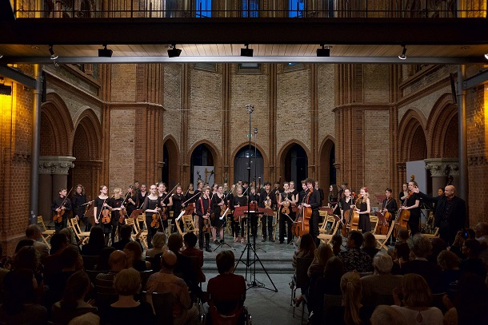

Unser nächstes Programm Winter 2016/2017
Gestern wurde in der Orchesterversammlung das nächste Programm für die Winterphase gewählt.
Start der Phase: 06.09.2016
Von Markus Vogel am 20.Juli 2016 veröffentlichtWir spielen:
WOLFGANG AMADEUS MOZART (1756 - 1791)
Ouvertüre zur Oper „La Clemenza di Tito “ KV 621 (1791)
FELIX MENDELSSOHN BARTHOLDY (1809 - 1847)
Ouvertüre zum Singspiel „Die Heimkehr aus der Fremde“ op.89 (1829)
GABRIEL FAURÉ (1845 - 1924)
Prélude zum Schauspiel „Pelléas et Mélisande“ op.80 (1898)
MICHAIL GLINKA (1804 - 1857)
„Kamarinskaja“, Variationen über zwei russische Volkslieder (1848)
----- Pause -----
FRANZ SCHUBERT (1797 - 1828)
Sinfonie Nr.6 C-Dur D 589 (1818)
- Adagio - Allegro
- Andante
- Scherzo: Presto
- Allegro moderato
Konzerttermine:
Konzert 1 Sa 11.02.2017, 18.00 Uhr, Lindenkirche Wilmersdorf
Konzert 2 So 12.02.2017, 16.00 Uhr, Heilig-Kreuz-Kirche Kreuzberg
